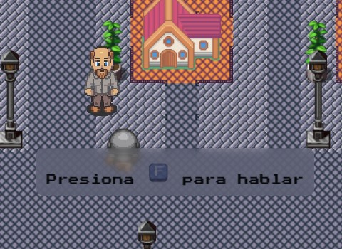
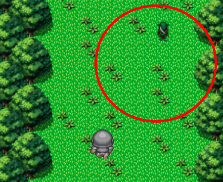
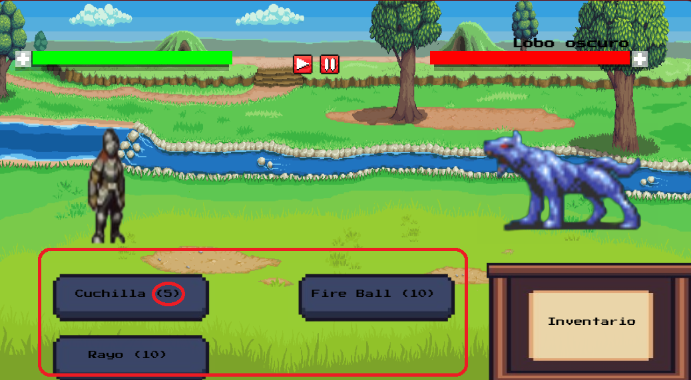
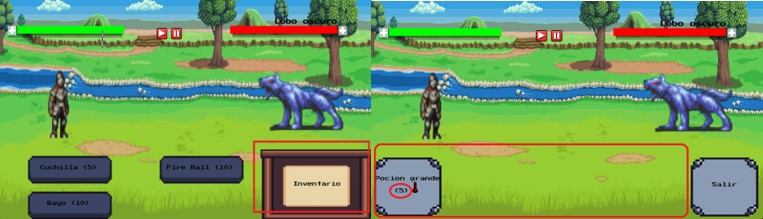
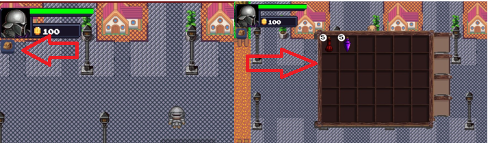
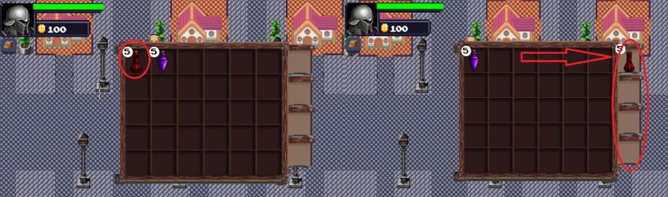
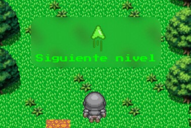
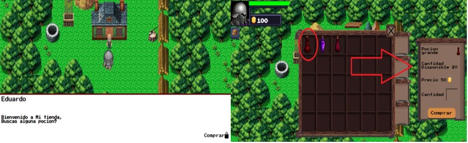

Al estar cerca de un NPC puedes presionar "F" para hablar con el

Al estar cerca del rango de un enemigo, este te atacara iniciando una batalla

Al momento de la batalla tendras disponible 3 ataques, a un lado del nombre del ataque podras ver el limite de veces que puedes usar un ataque por pelea.

A un lado de tus ataques podras ver tu inventario, el cual contendra tus pociones, igualmente podras ver la cantidad de pociones que tienes.

En la interfaz principal podras ver debajo de tus estadisticas un boton que representara tu inventario, en el cual podras entrar y observar las pociones que actualmente tienes y cuantas tienes disponibles.

Dentro del inventario podras elegir que pociones usaras en batalla, solo puedes tener un maximo de 4 pociones para la batalla .

Luego de derrotar al jefe del mapa actual, te aparecera una flecha la cual te indicara que avanzes unos pasos hacia adelante para ir al siguiente nivel.

En algunos mapas estaran los vendedores los cuales te podran vender pociones, solo debes darle click a la pocion que quieres ingresar la cantidad que quieres y comprar, luego estas apareceran en tu inventario.